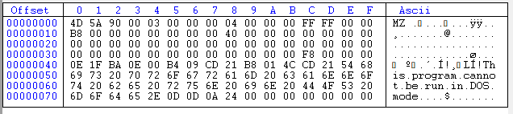

DOS Stub
This DOS stub follows just after the MS-DOS Header and is a mini DOS program - a series of machine instructions written by Microsoft to ensure backwards compatibility.
If a 32bit Windows binary is run in a 16-bit DOS environment, this program will display the error message: "This program cannot be run in DOS mode.", and then terminate.
